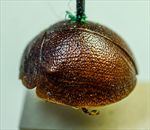
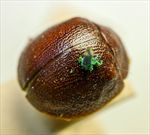
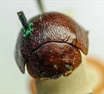
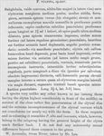

Click on images to enlarge
{kind=link}

Fig. 1. Paropsis vulpina type specimen, lateral view
{kind=link}

Fig. 2. Paropsis vulpina type specimen, dorsal view
{kind=link}

Fig. 3. Paropsis vulpina type specimen, lateral view
{kind=link}

Fig. 4. Paropsis vulpina, description
Name
Paropsis vulpina (Blackburn, 1897)
Corresponds to
This is almost certainly Ta177, one of the alta-group species. The dorsal sculpture, with its strongly convex shape and lacking any verrucae, as well as the size, the very broad marginal area of the elytra (HCE/BL > 24) and rather large interocular distance (A-A/BL ~2) fit well within the range of these characters in Ta177.
Diagnosis and Notes
Blackburn (1897) deals with P. vulpina as part of his 'subgroup iv' (i.e., those species without "strongly marked characters", whose greatest height is considerably in front of the middle of the elytral margin). Within that group, he characterises it as:
AA. Prothorax not (or scarcely) explanate at sides;
BB. The verrucae unpunctured or nearly so;
C. Elytra not having a sharply defined discal transverse wheal-like ridge;
DD. Subhumeral depression wanting;
E. Elytral interstices but little rugulose, at least not to the extent of obscuring the punctures and verrucae;
FF. The hinder part of the elytra not studded with isolated bead-like verrucae;
GG. Size much larger [than scalaris, Chp.] (Long. 3 lines [6.4 mm] or more).
Type specimen
Location: BMNH
Label data: /“Type” (red-bordered circle)/ “6249 Swan R. T”/ “Blackburn coll. 1910-236.”/ “Paropsis vulpina Blackb.”/
Male; Size: 7.3 x 6.65 x 3.9 mm; A-A: 1.46 mm; HCE/BL ~ 24.3 (from measurements on photo of lateral view of type)
Completely and uniformly mid-brown in colour; pronotal disc very evenly and deeply punctate, foveal elevation barely visible; elytra devoid of verrucae, disc very evenly and closely punctured; ventrally brown with darker, almost black, colouration on thoracic sternites.
Original description
Translation of original description (Figure 4) by ChatGPT, 04/2026:
Somewhat globular, very convex, with the greatest height (viewed from the side) placed before the middle of the elytral margin; moderately shining; ferruginous, with the antennae toward the apex (these elongate), the sterna, and in some specimens a few spots on the pronotum infuscate. Head closely and rather finely punctulate. Pronotum broader than long in the ratio of about 2¾:1, widened from the apex to a little beyond the middle; transversely impressed behind the apex; densely and rather finely punctulate (at the sides very coarsely rugulose); sides rather strongly rounded, not flattened; posterior angles rounded. Scutellum scarcely distinctly punctulate. Elytra not depressed beneath the humeral callus, not impressed behind the base; densely and rather finely punctulate, the punctures scarcely arranged in series (much coarser at the sides, rather finer posteriorly); furnished with numerous small inconspicuous verrucae; intervals slightly and somewhat reticulately rugulose; marginal area scarcely distinct from the disc (posteriorly marked by a faintly impressed, obsolete groove); inner margin of the slightly elevated humeral callus hardly more distant from the suture than from the lateral margin of the elytra. Basal ventral segment rather sparsely and weakly punctulate. Length 3½–4 lines [~7.4-8.5 mm]; width 3–3⅖ lines [~6.4-7.2 mm].
References
Blackburn, T. 1897, "Revision of the genus Paropsis. Part II", Proceedings of the Linnean Society of New South Wales, vol. 22, 166-189 (page 176).
Copyright © 2026. All rights reserved.